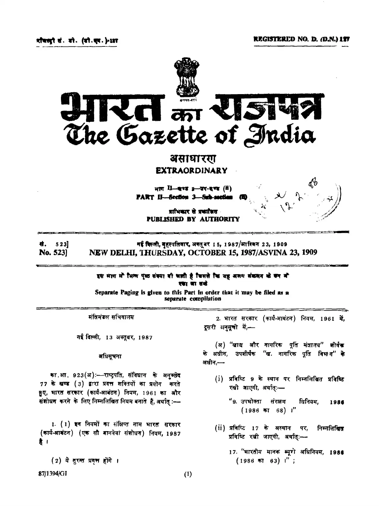
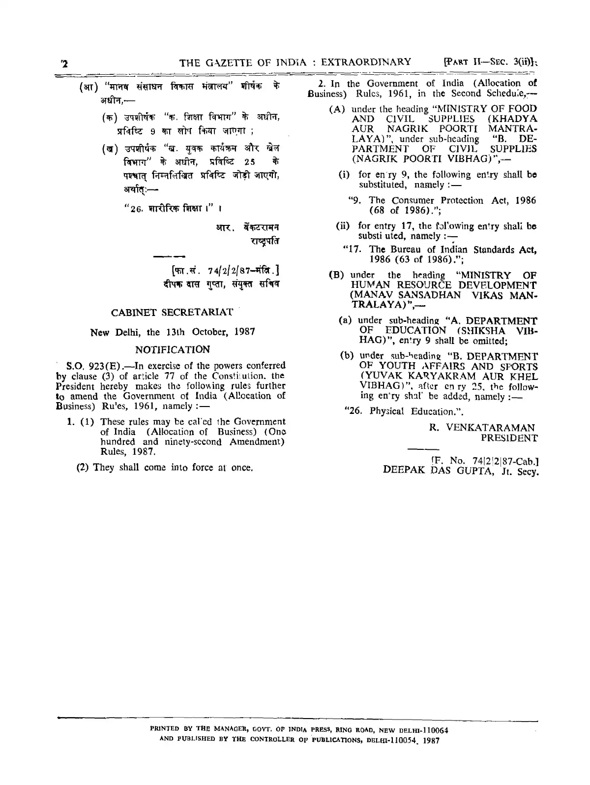

Amendment #192 (S.O. 923(E), 1987)
4 changes: 0 to the First Schedule, 4 to the Second Schedule. 4 applied
The order, page by page
Page 1 of 2

Page 2 of 2

1234Schedule 2 › MINISTRY OF FOOD AND CIVIL SUPPLIES › DEPARTMENT OF CIVIL SUPPLIES › entry 9
- 9. The Consumer Protection Act, 1986 (68 of 1986).
applied at schedule 2 › ministry MINISTRY OF FOOD AND CIVIL SUPPLIES (KHADYA AUR NAGRIK POORTI MANTRA- LAYA) › department B ›… in the Rules after #192
Schedule 2 › MINISTRY OF FOOD AND CIVIL SUPPLIES › DEPARTMENT OF CIVIL SUPPLIES › entry 17
- 17. The Bureau of Indian Standards Act 1986 (63 of 1986).
applied at schedule 2 › ministry MINISTRY OF FOOD AND CIVIL SUPPLIES (KHADYA AUR NAGRIK POORTI MANTRA- LAYA) › department B ›… in the Rules after #192
Schedule 2 › MINISTRY OF HUMAN RESOURCE DEVELOPMENT › DEPARTMENT OF EDUCATION › entry 9
applied at schedule 2 › ministry MINISTRY OF HUMAN RESOURCE DEVELOP- MENT › department A › entry 9 in the Rules after #192
after Schedule 2 › MINISTRY OF HUMAN RESOURCE DEVELOPMENT › DEPARTMENT OF YOUTH AFFAIRS AND SPORTS › entry 25
- 26. Physical Education.
applied at schedule 2 › ministry MINISTRY OF HUMAN RESOURCE DEVELOP- MENT › department B › entry 26 in the Rules after #192
How this document was read
From the Government of India (Allocation of Business) Rules, 1961 and their amendments, as published by the Cabinet Secretariat (cabsec.gov.in), read by orgpedia. The readings of the older scanned gazettes have known gaps.